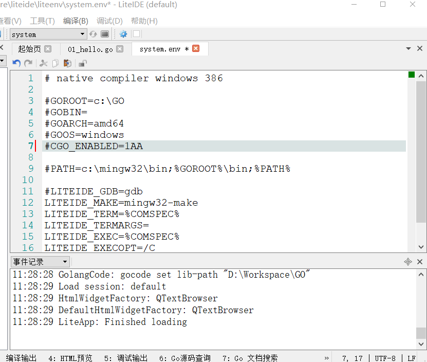
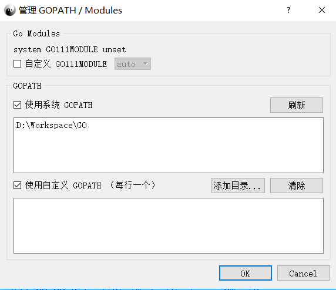
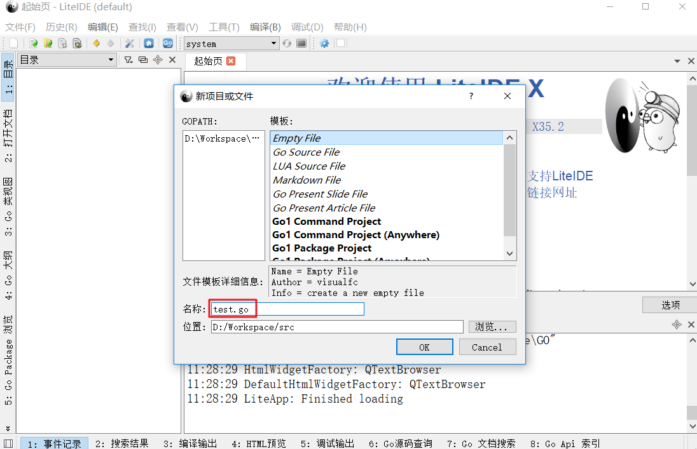
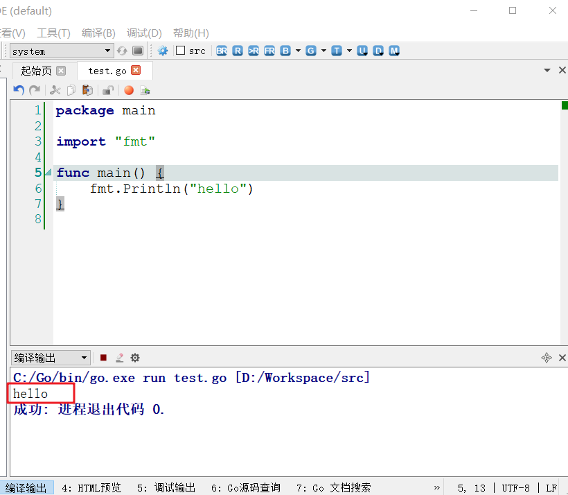

1.2.1 Go语言环境搭建
1、下载程序安装包：
Go安装包下载网址：https://www.golangtc.com/download

有zip压缩版和msi安装版两个版本下载。（这里使用msi安装版，比较方便）。
2、安装及环境配置
运行msi安装文件，千万不要在安装路径中出现中文，一路Next。
安装过程简单，一路“next”即可，也可以定义 安装目录
由于使用msi安装文件，所以Go语言的环境变量已经自动设置好了。
打开Windows中的命令提示符（cmd.exe）执行命令：
查看GO版本

打印 Go 语言的环境信息，出现如图所示信息，则安装成功

我们需要做的是设置工作空间gopath目录(Go语言开发的项目路径)
Windows 设置如下，新建一个环境变量名称叫做GOPATH，值为你的工作目录，例如GOPATH=D:\Workspace
以上 %GOPATH% 目录约定有三个子目录：
src 存放源代码（比如：.go .c .h .s等）
pkg 编译后生成的文件（比如：.a）
bin 编译后生成的可执行文件（为了方便，可以把此目录加入到 windows的PATH 变量中，在环境变量path后追加%GOPATH%\bin）
bin和pkg目录可以不创建，go命令会自动创建（如 go install），只需要创建src目录即可。
1.2.2 Go语言环境测试
新建一个hello.go文件，其内容如下：
package main
import "fmt"
func main(){
fmt.Println("hello world!!!")
}
编译并直接运行其程序：
1.2.3 LiteIDE安装
LiteIDE 是一款简单，开源，跨平台的 Go IDE。
发行版下载地址：https://sourceforge.net/projects/liteide/files
在官网下载合适版本：

windows版本，解压后即可使用：
 下载压缩包并解压至c:\盘即可，安装完成之后，打开应用程序，“工具”–>”编辑当前环境”,确认GOROOT变量与GO安装路径一致：
下载压缩包并解压至c:\盘即可，安装完成之后，打开应用程序，“工具”–>”编辑当前环境”,确认GOROOT变量与GO安装路径一致：

“工具”–>”管理GOPATH”

新建个小项目
运行结果
用快捷键“ctrl+r”

1.2.3 Goland安装
- 官网下载地址：https://www.jetbrains.com/go/
- 选择电脑系统对应的版本
3.打开安装

4.点击“next”按钮，选择要安装的路径，然后点击“next”，会出现安装选项。根据你自己电脑的型号，选择合适的版本后点击“next”按钮。

6.点击安装
7.点击完成
8.打开Goland激活
输入激活码
K03CHKJCFT-eyJsaWNlbnNlSWQiOiJLMDNDSEtKQ0ZUIiwibGljZW5zZWVOYW1lIjoibnNzIDEwMDEiLCJhc3NpZ25lZU5hbWUiOiIiLCJhc3NpZ25lZUVtYWlsIjoiIiwibGljZW5zZVJlc3RyaWN0aW9uIjoiRm9yIGVkdWNhdGlvbmFsIHVzZSBvbmx5IiwiY2hlY2tDb25jdXJyZW50VXNlIjpmYWxzZSwicHJvZHVjdHMiOlt7ImNvZGUiOiJJSSIsInBhaWRVcFRvIjoiMjAxOS0wNC0yNSJ9LHsiY29kZSI6IlJTMCIsInBhaWRVcFRvIjoiMjAxOS0wNC0yNSJ9LHsiY29kZSI6IldTIiwicGFpZFVwVG8iOiIyMDE5LTA0LTI1In0seyJjb2RlIjoiUkQiLCJwYWlkVXBUbyI6IjIwMTktMDQtMjUifSx7ImNvZGUiOiJSQyIsInBhaWRVcFRvIjoiMjAxOS0wNC0yNSJ9LHsiY29kZSI6IkRDIiwicGFpZFVwVG8iOiIyMDE5LTA0LTI1In0seyJjb2RlIjoiREIiLCJwYWlkVXBUbyI6IjIwMTktMDQtMjUifSx7ImNvZGUiOiJSTSIsInBhaWRVcFRvIjoiMjAxOS0wNC0yNSJ9LHsiY29kZSI6IkRNIiwicGFpZFVwVG8iOiIyMDE5LTA0LTI1In0seyJjb2RlIjoiQUMiLCJwYWlkVXBUbyI6IjIwMTktMDQtMjUifSx7ImNvZGUiOiJEUE4iLCJwYWlkVXBUbyI6IjIwMTktMDQtMjUifSx7ImNvZGUiOiJHTyIsInBhaWRVcFRvIjoiMjAxOS0wNC0yNSJ9LHsiY29kZSI6IlBTIiwicGFpZFVwVG8iOiIyMDE5LTA0LTI1In0seyJjb2RlIjoiQ0wiLCJwYWlkVXBUbyI6IjIwMTktMDQtMjUifSx7ImNvZGUiOiJQQyIsInBhaWRVcFRvIjoiMjAxOS0wNC0yNSJ9LHsiY29kZSI6IlJTVSIsInBhaWRVcFRvIjoiMjAxOS0wNC0yNSJ9XSwiaGFzaCI6Ijg4MjUwMTQvMCIsImdyYWNlUGVyaW9kRGF5cyI6MCwiYXV0b1Byb2xvbmdhdGVkIjpmYWxzZSwiaXNBdXRvUHJvbG9uZ2F0ZWQiOmZhbHNlfQ==-IJBDUuZMqhMJZfuM8Pgz1WXDRP3k9sKMJXuGdnbwoYDN4Y2G5Xmpw05GZUeESnh2/wzVxTHF4+PQ5ewk+J66F15b50VHSNxFI9XKWatoDfBc9EA1CddWqAU5CaipdMkSHoUDbT69PPGU4Vsfo1HTFv50tQ7RFVYMDbmVhw6mUbTFMvGiu5CZTuEVkmJ+1KpfuyQZvXjS1hXhfbK/xmpMG2/xRmK9lxW9PafZU1dWxqjYU8QBlUYgjdDsDS2apSTE+xFF6y3ZKK/YThpC7IYt5HR5Cc3VGjdb/H7jEAkH2/Uz0PrixPc3Bk5tU01rhxI4Z5VbmmWzGAhWWBtQEqU17A==-MIIEPjCCAiagAwIBAgIBBTANBgkqhkiG9w0BAQsFADAYMRYwFAYDVQQDDA1KZXRQcm9maWxlIENBMB4XDTE1MTEwMjA4MjE0OFoXDTE4MTEwMTA4MjE0OFowETEPMA0GA1UEAwwGcHJvZDN5MIIBIjANBgkqhkiG9w0BAQEFAAOCAQ8AMIIBCgKCAQEAxcQkq+zdxlR2mmRYBPzGbUNdMN6OaXiXzxIWtMEkrJMO/5oUfQJbLLuMSMK0QHFmaI37WShyxZcfRCidwXjot4zmNBKnlyHodDij/78TmVqFl8nOeD5+07B8VEaIu7c3E1N+e1doC6wht4I4+IEmtsPAdoaj5WCQVQbrI8KeT8M9VcBIWX7fD0fhexfg3ZRt0xqwMcXGNp3DdJHiO0rCdU+Itv7EmtnSVq9jBG1usMSFvMowR25mju2JcPFp1+I4ZI+FqgR8gyG8oiNDyNEoAbsR3lOpI7grUYSvkB/xVy/VoklPCK2h0f0GJxFjnye8NT1PAywoyl7RmiAVRE/EKwIDAQABo4GZMIGWMAkGA1UdEwQCMAAwHQYDVR0OBBYEFGEpG9oZGcfLMGNBkY7SgHiMGgTcMEgGA1UdIwRBMD+AFKOetkhnQhI2Qb1t4Lm0oFKLl/GzoRykGjAYMRYwFAYDVQQDDA1KZXRQcm9maWxlIENBggkA0myxg7KDeeEwEwYDVR0lBAwwCgYIKwYBBQUHAwEwCwYDVR0PBAQDAgWgMA0GCSqGSIb3DQEBCwUAA4ICAQC9WZuYgQedSuOc5TOUSrRigMw4/+wuC5EtZBfvdl4HT/8vzMW/oUlIP4YCvA0XKyBaCJ2iX+ZCDKoPfiYXiaSiH+HxAPV6J79vvouxKrWg2XV6ShFtPLP+0gPdGq3x9R3+kJbmAm8w+FOdlWqAfJrLvpzMGNeDU14YGXiZ9bVzmIQbwrBA+c/F4tlK/DV07dsNExihqFoibnqDiVNTGombaU2dDup2gwKdL81ua8EIcGNExHe82kjF4zwfadHk3bQVvbfdAwxcDy4xBjs3L4raPLU3yenSzr/OEur1+jfOxnQSmEcMXKXgrAQ9U55gwjcOFKrgOxEdek/Sk1VfOjvS+nuM4eyEruFMfaZHzoQiuw4IqgGc45ohFH0UUyjYcuFxxDSU9lMCv8qdHKm+wnPRb0l9l5vXsCBDuhAGYD6ss+Ga+aDY6f/qXZuUCEUOH3QUNbbCUlviSz6+GiRnt1kA9N2Qachl+2yBfaqUqr8h7Z2gsx5LcIf5kYNsqJ0GavXTVyWh7PYiKX4bs354ZQLUwwa/cG++2+wNWP+HtBhVxMRNTdVhSm38AknZlD+PTAsWGu9GyLmhti2EnVwGybSD2Dxmhxk3IPCkhKAK+pl0eWYGZWG3tJ9mZ7SowcXLWDFAk0lRJnKGFMTggrWjV8GYpw5bq23VmIqqDLgkNzuoog==
PS:标准命令概述
Go语言中包含了大量用于处理Go语言代码的命令和工具。其中，go命令就是最常用的一个，它有许多子命令。这些子命令都拥有不同的功能，如下所示。
build：用于编译给定的代码包或Go语言源码文件及其依赖包。
clean：用于清除执行其他go命令后遗留的目录和文件。
doc：用于执行godoc命令以打印指定代码包。
env：用于打印Go语言环境信息。
fix：用于执行go tool fix命令以修正给定代码包的源码文件中包含的过时语法和代码调用。
fmt：用于执行gofmt命令以格式化给定代码包中的源码文件。
get：用于下载和安装给定代码包及其依赖包(提前安装git或hg)。
list：用于显示给定代码包的信息。
run：用于编译并运行给定的命令源码文件。
install：编译包文件并编译整个程序。
test：用于测试给定的代码包。
tool：用于运行Go语言的特殊工具。
version：用于显示当前安装的Go语言的版本信息。
学习资料
Go语言官网(需要翻墙)：https://golang.org/
go中文社区：https://studygolang.com
go中文在线文档：https://studygolang.com/pkgdoc